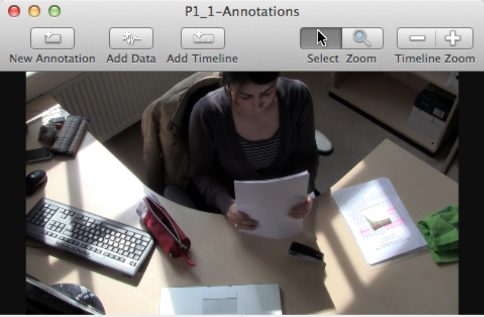
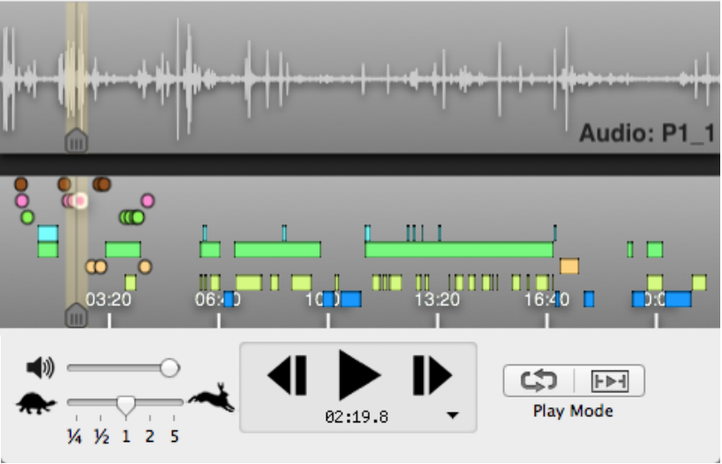
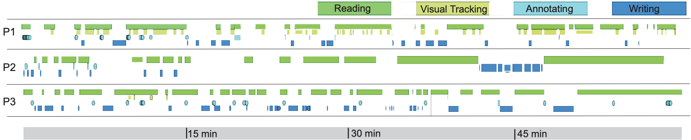

Supporting Active Reading with Multimodal Projected Interfaces On and Above the Desk
What does it mean to create a desktop workspace of the future? An office without papers? How can we integrate physical and digital representations of media in a seamless manner? Investigating the boundaries of physical-digital space can provide valuable insights into understanding natural means for interacting with digital information. To do this, I studied human behavioral patterns in the context of reading activities.
- Project Date: Jun 2011 - Jun 2012
- Affiliations: UC San Diego and MIT Media Lab
- Funding: NA
- Collaborators: Neema Mahdavi, Anne Marie Piper, Nadir Weibel, Simon Olberding, and Jim Hollan
Background
Active reading is a critical task of knowledge workers. Knowledge workers spend substantial time in office environments, where information is spread between digital devices (computers, smart phones, tablets, etc.) and physical media (paper documents, whiteboards, books, printed photos, etc.). Furthermore, collaborative interaction and information sharing with others is often central to the accomplishment of tasks. The introduction of mobile devices, interactive tabletops, multitouch surfaces, and digital paper presents many challenges for designing workspaces that support fluid natural interaction with information spanning the physical and digital worlds.
Goal
The goal of this research is understand the structure and detailed patterns of active reading activities in order to be able to augment them in effective and natural ways.
Methods
- Quantitative analysis of annotated video data
- Qualitative analysis of video data
{kind=link}

I analyzed 333 minutes of overhead video data of knowledge workers and annotated the video data with a tool called ChronoViz.
{kind=link}

Multiple categories can be assigned to single events and events of varying duration. Filtering and reordering annotations enables visualization and identification of new patterns of behavior.
Key Findings
{kind=link}

Reading does not describe a single activity. Reading consists of the fluid interaction among multiple instances of mini-activities: we call this Active Reading. In the analysis, I characterized four types of active reading behaviors: reading, annotating, navigating, and organizing. One central task involves immersive reading. It requires intense concentration and may be susceptible to the slightest of interruptions. Annotation is another central task commonly associated with immersive reading, serving to assist subsequent activity. I also identified several peripheral tasks that provide support: visual tracking, underlining and highlighting, cross-referencing between multiple documents, content browsing, and document organization.
Looking up close, I identified patterns of body-based cues (e.g., pointing) in coordination with material artifacts (e.g., paper) that tend to signify each instance of reading related activity. This includes leaning over the desk during immersive reading, switching pen grip postures to alternate between annotation and writing tasks, or placing a finger between pages for crossreferencing. By analyzing these patterns, I was able to provide several implications for designing intuitive gesture-based interaction techniques to support active reading.
{kind=link}
Prototype Design
I prototyped several interaction techniques based on the microanalysis for on and above the desk to support active reading. Some of these include visual tracking, pinch-to-select, drag to copy and parallel view. Visual tracking with a pen or finger temporarily highlights text on the paper document. Pinch-to-select gesture persistently highlights blocks of text. Tucking a page provides an auxiliary view on the digital surface.
Publications
| Microanalysis of Active Reading Behavior to Inform Design of Interactive Desktop Workspaces. Matthew K. Hong, Anne Marie Piper, Nadir Weibel, Simon Olberding, and James D. Hollan. Proceedings of the 2012 ACM International Conference on Interactive Tabletops and Surfaces (ITS 2012), Boston, MA, USA, 2012. (29% acceptance rate) |